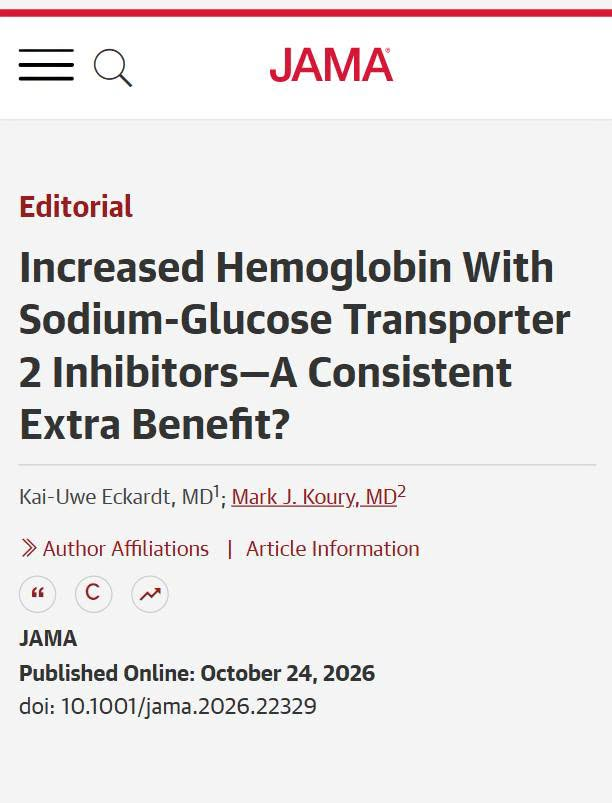

Low iron can artificially elevate A1C.
#ironHD #anemiaHD #a1cHD #glucoseHD #redbloodcellsHD #hemoglobinHD #glycationHD
Louis shares a physician's explanation that low iron can inflate HbA1c, possibly by slowing red blood cell turnover so older cells with more glycation remain in circulation. If A1c seems high on a healthy diet, check iron status.
Low iron can artificially elevate A1C.
#ironHD #anemiaHD #a1cHD #glucoseHD #redbloodcellsHD #hemoglobinHD #glycationHD
On a healthy whole-food, plant-based diet but your HbA1c is higher than you’d expect?
Check your iron status….
Research suggests that iron deficiency can artificially elevate HbA1c, even before it progresses to anemia.
In other words, if your iron status is low, your HbA1c may be suggesting higher average blood sugar than you’re actually experiencing.
Why? A possible mechanism is that (possibly even mild) iron deficiency can slow red blood cell turnover, potentially leaving more older red blood cells circulating. Since HbA1c is a measure of the damage to hemoglobin in red cells, older red blood cells that simply hang around longer tend to have higher HbA1c levels, even if average blood sugar levels aren’t very high.
Iron deficiency may also increase the rate at which hemoglobin becomes glycated, although the exact mechanisms are still being investigated.
I recommend in depth analysis of iron status for all my patients and this is one reason why.
Study:

A JAMA editorial presented at Kidney Week says SGLT2 inhibitors consistently raise hemoglobin and hematocrit in people with cardiovascular disease, heart failure or chronic kidney disease, with or without diabetes. This may contribute to anemia management on top of their established cardiovascular and kidney benefits.

Louis flags that both high and very low iron stores raise heart risk and shares a post explaining iron deficiency without anemia (IDWA). Hemoglobin stays normal until stores are badly depleted, and many labs set the ferritin lower limit below the clinically useful threshold.
Summarises a Rhonda Patrick video: moderate exercise is ineffective for many, so vigorous HIIT such as the Norwegian 4x4 (four 4-minute efforts at about 80-90% max heart rate with 4-minute recovery) improves VO2 max. She cites a two-year study that reversed about 20 years of cardiac aging in sedentary 50-year-olds, and exercise reducing glycation-driven heart stiffness (Asif et al., PNAS 2000).
A sub-study of the JAPAN-ACS trial found high baseline advanced glycation end products (AGEs) were independently associated with plaque progression, and statin therapy significantly lowered AGE levels. Louis notes the trial produced the largest plaque regression, about -17%, in a drug trial.

Pooled data from 9 randomized trials found taurine supplementation lowered fasting insulin, triglycerides and total cholesterol. In overweight participants BMI fell by 1.14 kg/m2, and in obesity HbA1c and HOMA-IR improved.

Louis shares an analysis of the Whitehall II study showing that glucose and A1C stay normal for years while insulin resistance accumulates, because the pancreas compensates with extra insulin. He recommends fasting insulin, HOMA-IR and a 2-hour OGTT with insulin to detect it early.